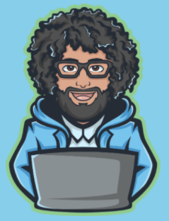

Feed the algorithm and spread the word!, This is class one of a 30 week software engineering bootcamp being offered on Twitch for those affected by the pandemic. It is aimed at helping folx launch a new career in software engineering with a focus on web development!
I want to help you become a software engineer for free.
Last year I ran a free fully remote coding bootcamp that helped 72 people get software engineering jobs. Those 72 people saw their salary increase on average by 53,000 dollars! And we are doing it again! A fully free 30 week software engineering bootcamp!

Note: This bootcamp started in January, but you can still join us! Please follow everything on this page and then join the #catchup-crew on our Discord! All of our past classes can be found here and all the materials can be found in the #follow-along-materials channel on Discord! Excited to have you join us!
Most folx who participated last cohort did not have a degree and had never coded before joining the bootcamp. By the end of program, they worked with real paid clients, contributed to open source software, voluntered with wonderful charities, built their own fullstack javascript projects, and ultimately landed jobs at companies like Amazon, Twitter, Chownow, other amazing startups, and dozens of companies across the globe.
Also if you want to learn anytime watch the youtube video. We have recorded all the classes there! Now what are you waiting on, Go and enjoy the gem videos!!!!! If you love coding 🤞